Your day as a Relationship Manager
How to take on new sign-ups, get staff ready, place them with families, and keep daily work and monthly billing on track, all from the HomeGenny app.
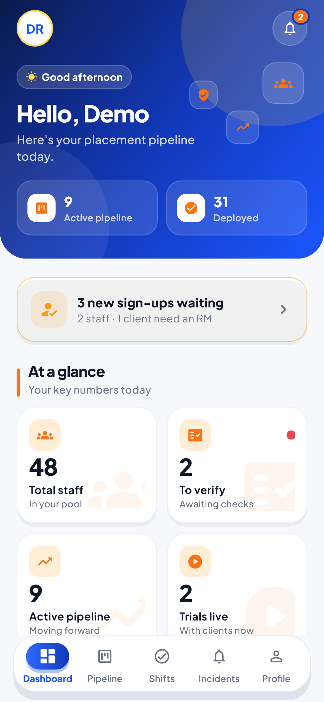
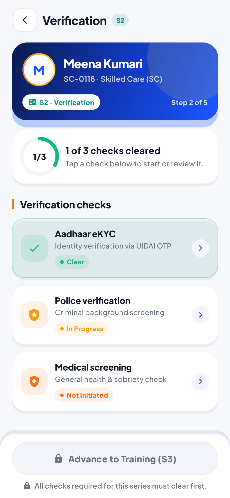
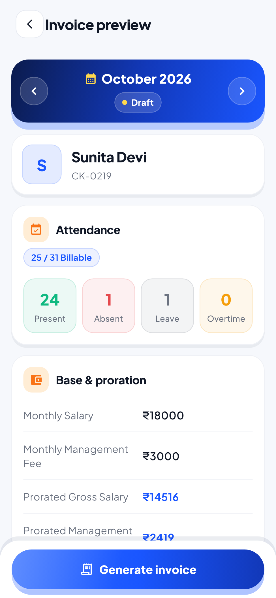
Your role
Families and staff never set up work with each other directly. You sit between them. You own every family and staff member you accept: you take staff through the joining steps, suggest staff to families, create the placement, watch the daily work, and send the monthly bill.
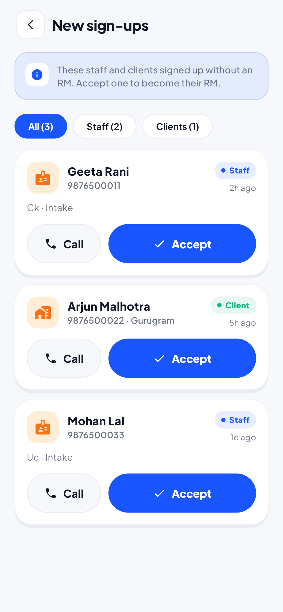
1. AcceptNew sign-ups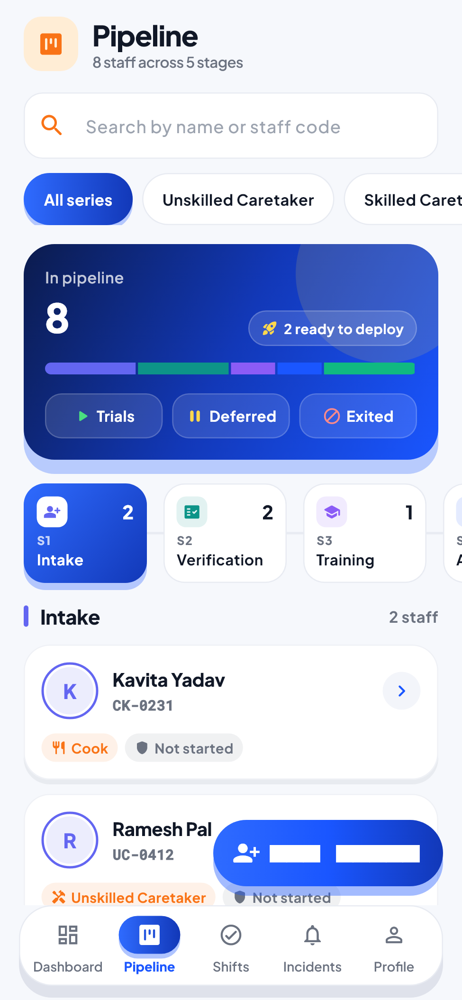
2. Get staff readyS1 to S5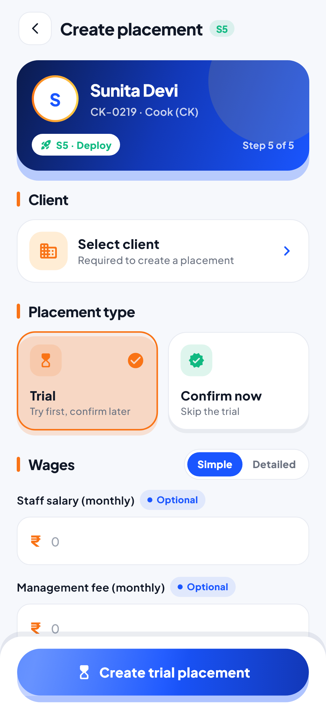
3. PlaceTrial, then confirm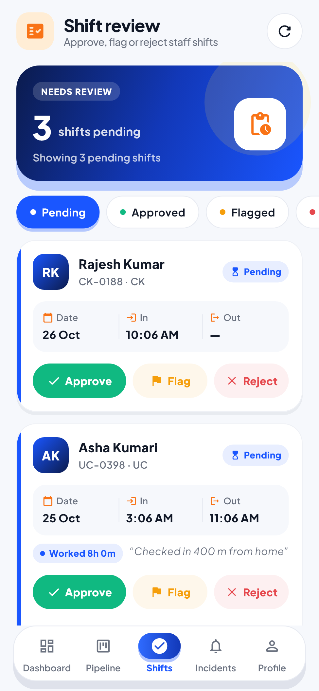
4. WatchShifts and incidents| The five joining stages (S1–S5) | What happens |
|---|---|
| S1 Intake | Profile and documents are collected; refundable deposit is taken. |
| S2 Verification | Aadhaar, police check and medical (plus driving licence and e-challan for drivers). |
| S3 Training | Training material, quizzes and video certification. |
| S4 Agreements | The staff member signs the employment agreement (A1). |
| S5 Deploy | Ready to be placed with a family. Scope of work (A2) and indemnity (A3) are sent to the family here. |
You move a staff member forward one stage at a time. The app does not let you skip a stage. At any stage you can also pause a case (Deferred) or close it (Exited).
1Start of the day
Log in with your mobile number and the 6-digit code, the same way as everyone else. RM accounts are created by the back office; you can't sign up as an RM in the app.
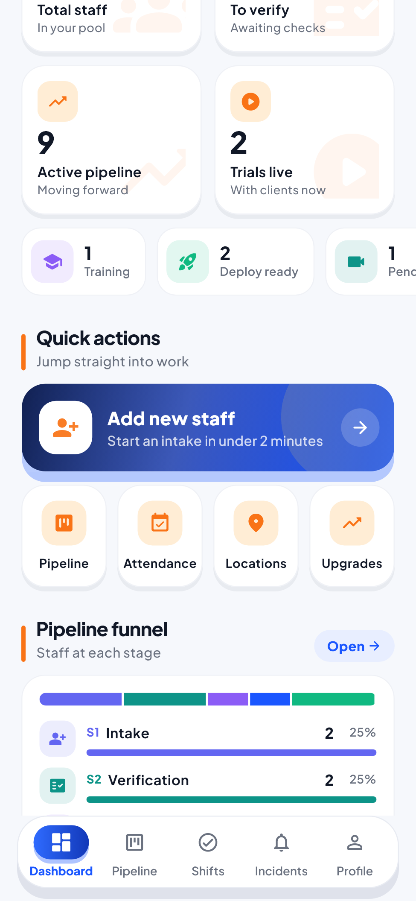
1Your dashboard
- What you see
- Your active pipeline and how many staff are deployed, a banner for new sign-ups waiting, and At a glance: total staff, staff to verify, active pipeline and live trials.
- Quick actions
- Add new staff (start an intake), Pipeline, Attendance, Locations, Upgrades.
- Bottom bar
- Dashboard, Pipeline, Shifts, Incidents, Profile.
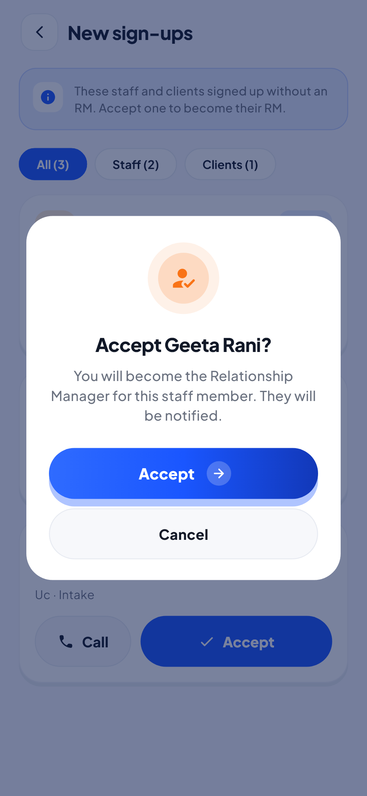
2Accept new sign-ups
- Where
- Tap the new sign-ups waiting banner on the dashboard.
- What you see
- Staff and families who signed up and don't have an RM yet. Filter by Staff or Clients.
- What to do
- Tap Call to speak to them first if you like. Then tap Accept and confirm.
- Good to know
- The first RM to accept becomes their RM. If someone else got there first, you'll see that it's already taken.
2Getting staff ready (Pipeline)
1The pipeline board
- What you see
- How many staff are in the pipeline and how many are ready to deploy, buttons for Trials, Deferred and Exited, and one card per stage (S1 Intake, S2 Verification, S3 Training…). Tap a stage to list its staff.
- Find someone
- Search by name or staff code, or filter by series (Unskilled Caretaker, Skilled Caretaker, Cook).
- Add someone yourself
- Tap Add staff to start a new intake (Aadhaar and phone are checked against the restricted list).
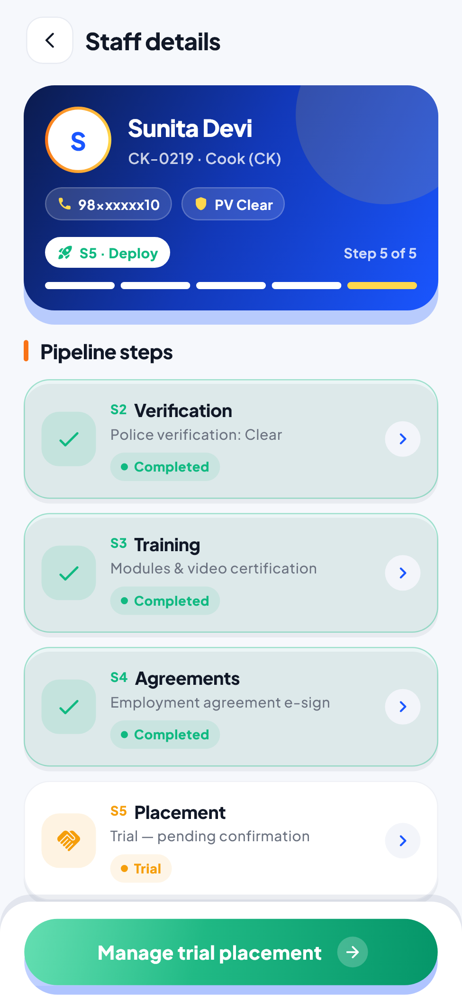
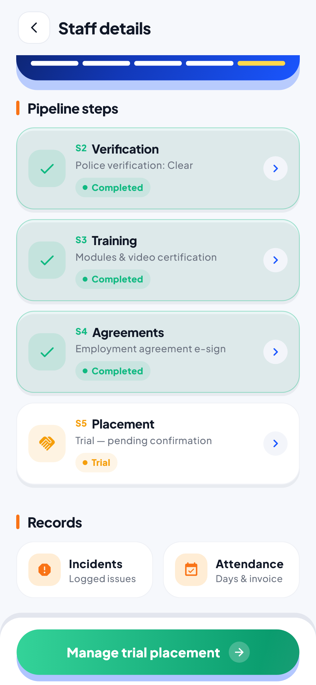
2A staff member's page
- What you see
- Their name, staff code, series, police-check status and current stage ("Step 5 of 5"). Pipeline steps lists each stage as Completed or in progress. Tap a stage to work on it.
- Records
- Incidents logged against them, and Attendance (days and invoice).
3S2: run the checks
- What you see
- How many checks are cleared and one row per check: Aadhaar eKYC, Police verification, Medical screening (drivers also have driving licence and e-challan). Each shows Clear, In Progress or Not Initiated.
- What to do
- Tap each check to start or review it.
- When all are clear
- The Advance to Training (S3) button unlocks. Until then it stays locked with "All checks required for this series must clear first".
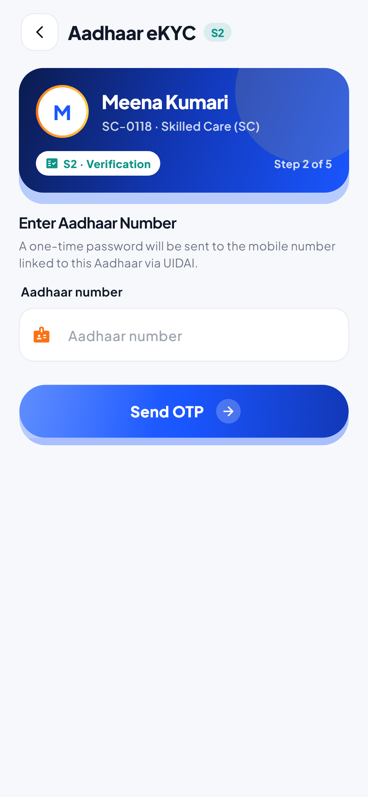
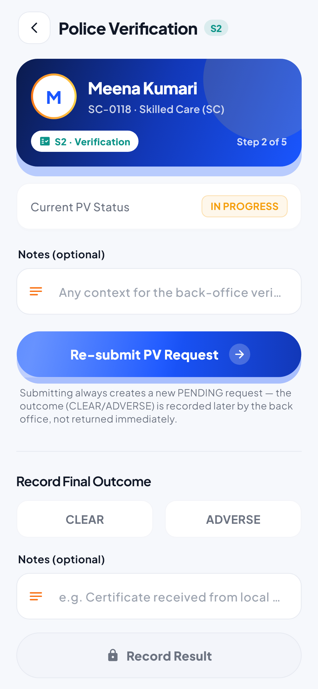
4Aadhaar and police checks
- Aadhaar
- Type the 12-digit Aadhaar number and tap Send OTP. The staff member reads you the OTP sent to their Aadhaar-linked phone; enter it to finish.
- Police
- Submit the police verification request (or Re-submit PV Request). When the back office has the result, choose CLEAR or ADVERSE under Record Final Outcome, add a note and tap Record Result.
- Medical
- Choose CLEAR or FAILED, add the clinic or certificate reference and tap Submit Medical Result.
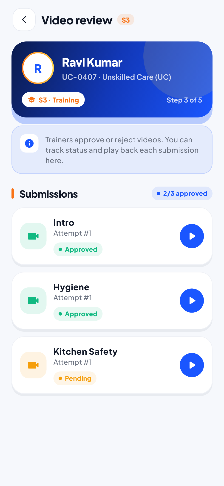
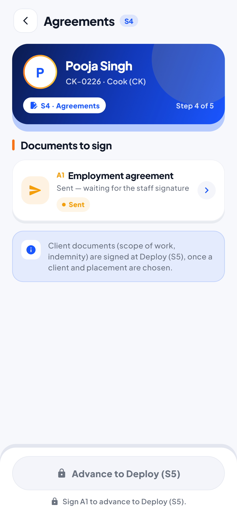
5S3 training and S4 agreement
- S3 Training
- Trainers approve or reject the staff member's videos. On Video review you see each submission as Approved or Pending and can play it back. When training is done, sign off and advance to S4.
- S4 Agreements
- Send the A1 Employment agreement for e-sign. It shows Sent — waiting for the staff signature, then Signed. Once signed, tap Advance to Deploy (S5).
3Matching and placing
When a family asks for staff, you suggest the best people and the family chooses. Then you place the chosen person on a trial.
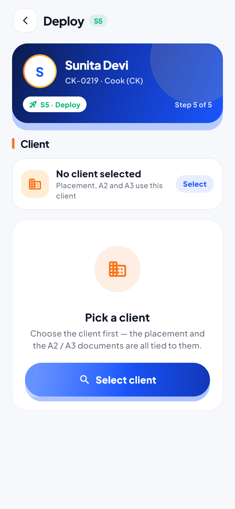
1Create the placement
- Where
- The staff member's S5 Deploy page. This only works once they are at S5.
- What to do
-
- Tap Select client and pick the family. The placement and the A2 and A3 documents are all tied to this family.
- Choose Trial (try first, confirm later) or Confirm now (skip the trial).
- Enter the monthly salary and management fee (Simple), or use Detailed for the full wage breakdown.
- Tap Create trial placement.
- Then
- Send the family the A2 Scope of work and A3 Indemnity from the same S5 page.
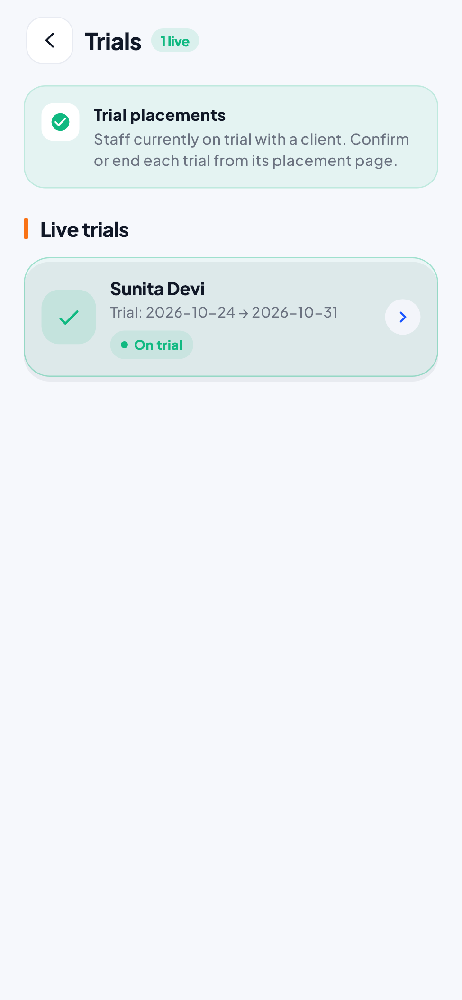
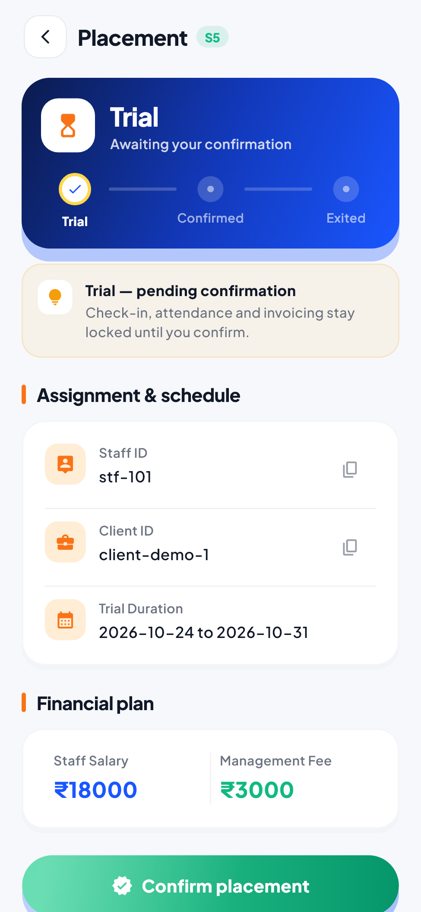
2Confirm or end the trial
- Where
- Pipeline → Trials, then tap the staff member.
- What you see
- The trial dates, the salary and management fee, and where the placement is (Trial → Confirmed → Exited).
- What to do
- When the trial goes well, tap Confirm placement. Check-in, attendance and invoicing stay locked until you confirm. If it doesn't work out, end the placement.
4Daily operations
1Review shifts (Shifts tab)
- What you see
- Staff check-ins and check-outs. Check-ins are approved automatically, but anything unusual (for example "Checked in 400 m from home") shows here for you.
- What to do
- Tap Approve, Flag or Reject on each shift. Use the filters to see Pending, Approved, Flagged or Rejected shifts.
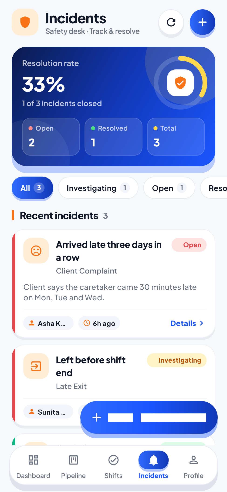
2Handle incidents (Incidents tab)
- What you see
- Your resolution rate and every incident: family complaints, misconduct, safety, attendance fraud, driving violations and late exits.
- How an incident moves
- Open → Investigating → Escalated (if needed) → Resolved → Closed. Write what you did in the resolution.
- Also comes here
- When a staff member taps Not my job on a family's instruction, it reaches you to decide.
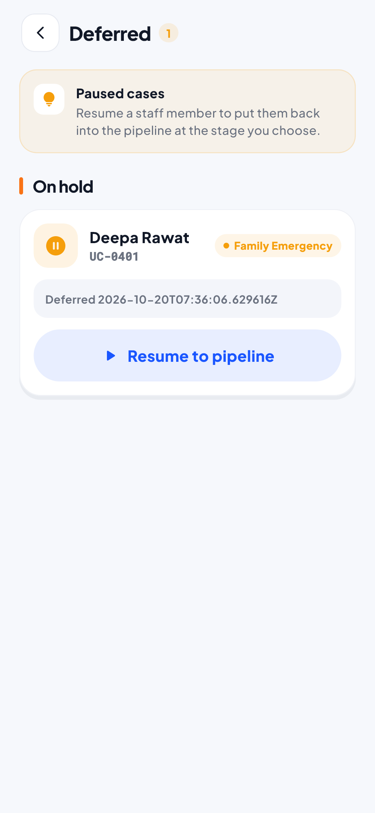
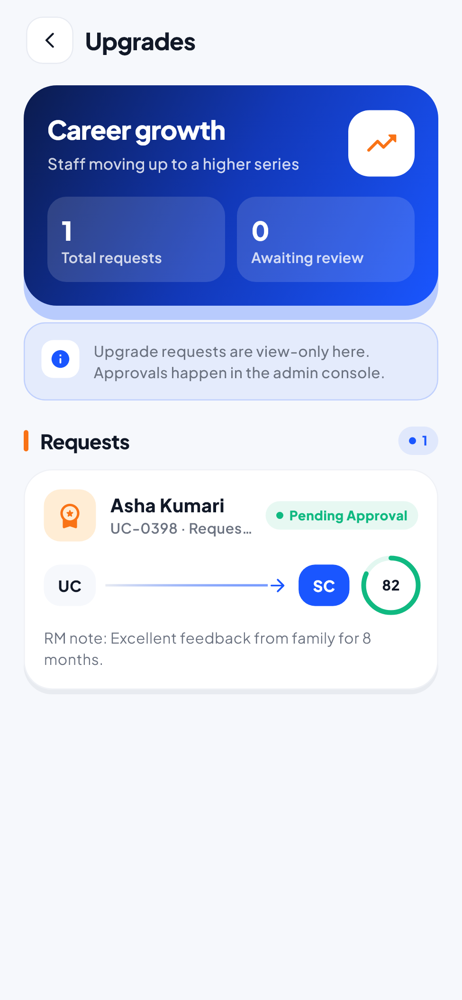
3Follow-up lists
- Deferred
- Paused cases with the reason and resume date. Tap Resume to pipeline and choose the stage to put them back.
- Exited
- Staff who left the pipeline, with the outcome. Read-only.
- Upgrades
- Staff you recommended for a higher series, with their eligibility score. Approvals happen in the admin console.
5Monthly billing
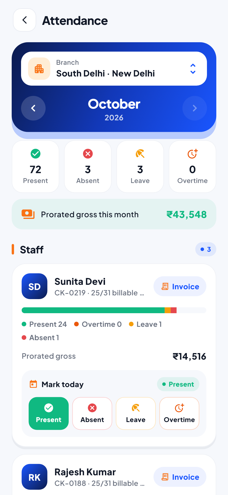
1Check the month's attendance
- Where
- Dashboard → Attendance.
- What you see
- For your branch and month: totals for present, absent, leave and overtime days, and one row per staff member with their billable days.
- What to do
- Fix any wrong days first. Then tap Invoice on a staff member's row.
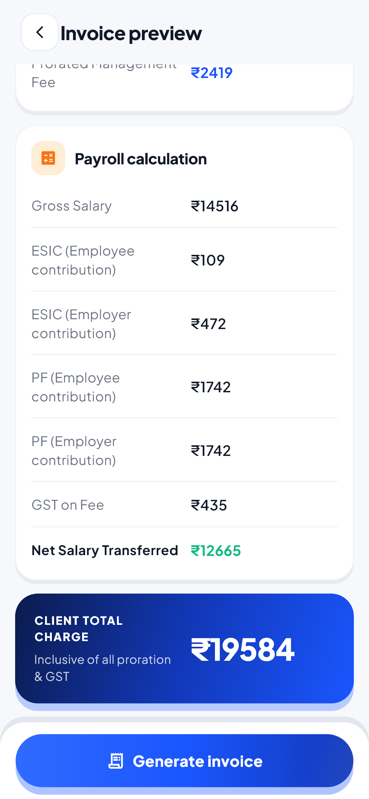
2Preview and generate the invoice
- What you see
- A Draft for the month: attendance (billable days), salary and management fee prorated to those days, the payroll calculation (ESIC and PF, employee and employer shares, GST on the fee) and the client total charge.
- What to do
- Check the numbers, use the arrows to change month if needed, and tap Generate invoice.
- What happens next
- The family sees the invoice in their Pay tab. Finance runs payroll from the web portal, and the staff member's salary goes to their bank account.
Common questions
- Can I move someone from S2 straight to S4?
- No. Staff move one stage at a time, and the server refuses any skip.
- Another RM accepted the sign-up I wanted.
- The first RM to accept owns the person. Talk to your branch manager if it needs to change.
- A family rejected every staff member I suggested.
- Their request comes back to you with their reason. Shortlist new staff in the web portal.
- What deposit do staff pay at intake?
- A refundable deposit: ₹1,000 for UC and CK, ₹1,500 for SC, ₹2,000 for DR and ₹500 for MAID (DR and MAID are paused for new staff).
- Where are payroll and settlements done?
- Finance runs payroll, settlements and exit settlements in the web portal. You generate the client invoice in the app.